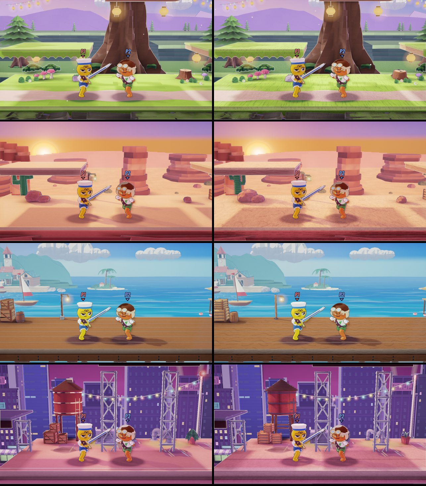

Paper props and the hatched print on every stage
The meadow's rolled-and-scored props and its hatched print on the grove, canyon, beach and city. The barrel and rock are the meadow's; the stages' other props needed new designs, each in two (A and B). Every option has the same print, each stage's surfaces in their own marks: grass and soil on the grove, sand and rock strata on the canyon, wood grain on the beach's boards (kept light under the fight), roofing and steel on the city. Choose a stage, a view and an option; press 1 to 3 to switch in place. You can mix A and B prop by prop.
Built in the game, today left and built right, fighters in play (grove, canyon, beach, city):

| Prop | Stages | A | B |
|---|---|---|---|
| Mushroom | Grove | A scored dome cap with pressed lines and flat paper spots, gills under it | A cap of rolled rings stacked into a dome, spots as tiny coils |
| Stump | Grove | A rolled trunk with pressed bark furrows, growth rings on the cut top, rolled roots | Coiled layers for the trunk, a coiled strip on top as the rings, curled roots |
| Crate | Canyon, beach, city | A scored card box with rolled-tube corners and edges and a rolled brace | Sides of rolled slats between rolled corner posts |
| Lamp post | Canyon, beach | A rolled post with a coiled foot and a scored paper lantern in iron rings | The same post with a round ribbed paper lantern |
| Life ring | Beach | A rolled tube ring with four white bands wrapped round it | A flat cut ring in red and white segments with a rolled rope round it |
| Potted plant | City | A scored pot with a rolled rim and curled-strip leaves | The same pot with quilled leaf coils |
| Cactus | Canyon | A rolled trunk with pressed ribs and rolled arms | Stacked coils, trunk and arms |
| Water tower | City | A scored drum (pressed staves) with rolled hoops and a coiled roof, on rolled legs | A drum of stacked rolled rings under a scored cone roof |
| Air conditioner and roof vents | City | A box with a grille of rolled tubes and a coiled fan; a rolled stack | A box with pressed grille lines; a coiled stack |
My picks are highlighted: mostly A, with B's coiled stump (its coil reads as growth rings), B's rolled-slat crate (it reads as paper and as a crate at once) and B's coil-stacked cactus (clearly paper, where A's reads as a smooth cactus).